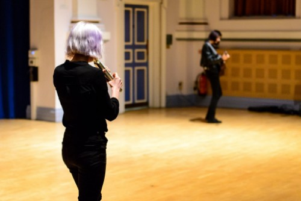
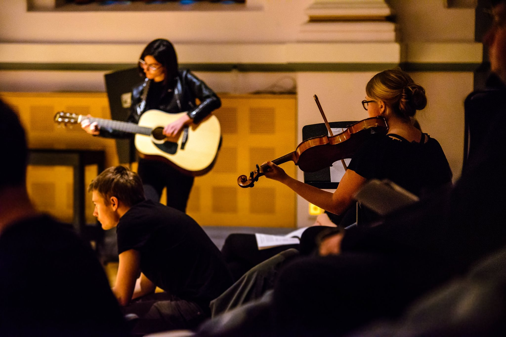
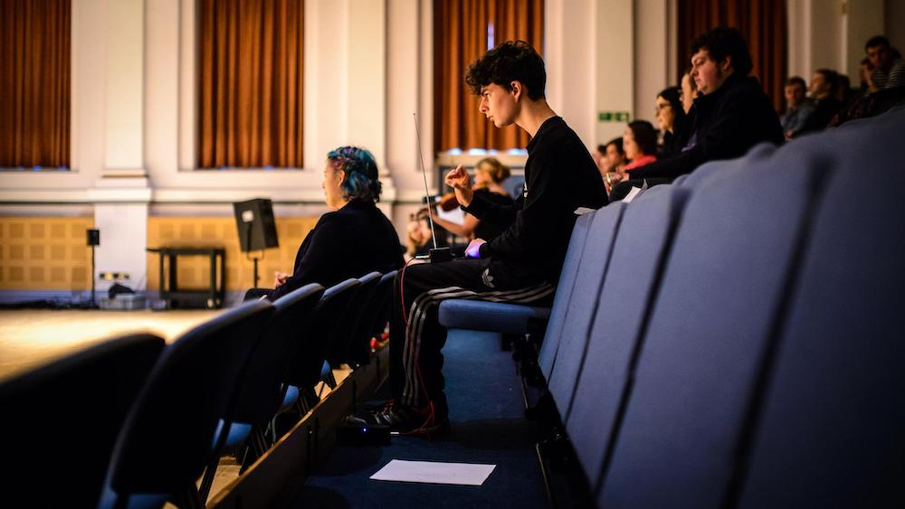

A Study of Space and Movement

A Study of Space and Movement was my first collaboration for a LUUMS Composers Ensemble concert. It began with two ideas: Alexandra wanted to use spatialisation in the concert hall and I wanted to use the position of moving instrumentalists on stage to control the actions of the other instrumentalists, leaving the piece to be determined by the space.

The piece is for two instruments capable of playing long sustained drones and four melody instruments, two of which must be capable of being carried around the stage whilst played.

Photos by Ben Hutchinson Photography
The premiere featured:
- Cello - Lydia Hutton
- Flute - Lottie Davis
- Viola - Lara Wassenberg
- Theremin - Oscar Richardson
- Melodica - Mia Windsor
- Guitar - Yoanna Krastitelska
The original arrangement featured Alexandra Prellberg on accordion rather than Yoanna Krastitelska on guitar.